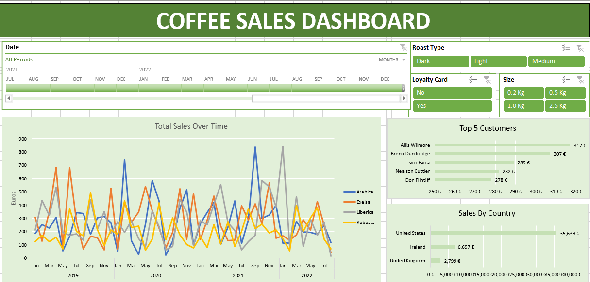

Explore the Car Price Analysis project, a dive into a dataset encompassing various car attributes.
Uncover insights into used car pricing through Exploratory Data Analysis (EDA) and Feature Importance Analysis.
In this project, I aim to demontstrate my data analysis skills, explores factors such as mileage, owner history, car models, and trends over the years.
Let's delve into the intricacies of the used car market and gain a deeper understanding of its dynamics!


The Walmart EDA project delves into diverse aspects such as customer behavior, sales performance, and business trends. Leveraging SQL queries, the analysis uncovers insights into peak sales hours, identifies best-selling products, and explores the impact of various factors. Dive into the repository to unearth valuable information that contributes to informed decision-making in the realm of retail analytics.

Delve into the Coffee Sales Data Analysis project, where I leverage Excel to unravel insights from coffee sales data. Using functions like XLOOKUP, INDEX, MATCH, and IF, the focus is on crafting an interactive dashboard that provides valuable perspectives on sales trends, top customers, and sales by country. The dataset, sourced from Kaggle, undergoes manipulation, pivot table creation, and chart integration for a clear and visually appealing representation. Explore the interactive dashboard with features such as slicers for dynamic data filtering ‚òïÔ∏èüìä

This project delves into accident and vehicle data to uncover insights into road safety. Using datasets like accident.csv and vehicle.csv, I explore various aspects, from the seriousness of accidents to factors like weather conditions and vehicle age. Join me in the exploration process of key patterns that contribute to informed decision-making for road safety. Dive into the project's code and data to explore these valuable findings!